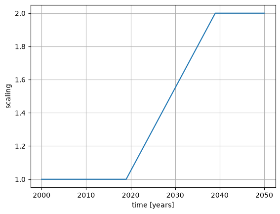
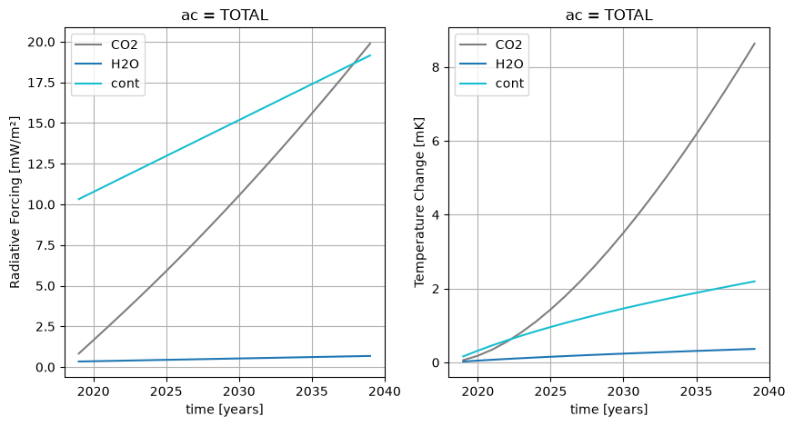

Scaling
In this example, the time evolution of type scaling is demonstrated. In the scenario, the emissions increase linearly from the year 2019 to the year 2039. The emissions in 2039 are set to be twice as much as in 2019.
Imports
If the openairclim package cannot be imported, make sure that you have installed openairclim properly (see User Guide → Installation).
import numpy as np
import xarray as xr
import matplotlib.pyplot as plt
import openairclim as oac
from openairclim.utils.create_artificial_inventories import (
ArtificialInventory,
convert_xr_dict_to_nc,
)
xr.set_options(display_expand_attrs=False)
<xarray.core.options.set_options at 0x7fe352210ec0>
Input files
In order to be able to execute this example simulation, three types of input are required.
Configuration file
scaling.tomlEmission inventories
art_inv_2019.ncart_inv_2039.nc
Time evolution file for scaling:
time_scaling_linear_2019-2039.nc
Emission inventories
Artificial (random) emission inventory generated with OpenAirClim
Inventory years
2019 (original)
2039 (identical to 2019 inventory, only year changed)
The inventories are generated in the input directory of this demo. The random seed is fixed so that the example gives reproducible results.
np.random.seed(42)
art_inv = ArtificialInventory(year=2019).create()
art_inv_dict = {
2019: art_inv,
2039: art_inv.assign_attrs(Inventory_Year=2039),
}
convert_xr_dict_to_nc(art_inv_dict, prefix="art_inv", out_path="../input/")
Time evolution
Time evolution with scaling of emissions
Time period: 2000 - 2050
Linear ramp-up between years 2019 and 2039
evo = xr.load_dataset("../input/time_scaling_linear_2019-2039.nc")
display(evo)
fig, ax = plt.subplots()
evo.scaling.plot(ax=ax)
ax.grid(True)
<xarray.Dataset> Size: 408B
Dimensions: (time: 51)
Coordinates:
* time (time) int32 204B 2000 2001 2002 2003 2004 ... 2047 2048 2049 2050
Data variables:
scaling (time) float32 204B 1.0 1.0 1.0 1.0 1.0 1.0 ... 2.0 2.0 2.0 2.0 2.0
Attributes: (5)
Simulation run
oac.run("scaling.toml")
2026-10-16 10:43:08,687 INFO main:449 (run):
-------------- OPENAIRCLIM MAIN RUN LOG --------------
oac version: 0.20.0
timestamp: 2026-10-16 10:43:08.687230
input file: scaling.toml
user: runner
platform: Linux 6.17.0-1022-azure
oac_premium available: False
NOTE:
OpenAirClim is currently in development phase.
The computed output is not to be used for scientific
purposes until the release of our publication.
The NOx response surfaces using the tagging method
are not validated and can produce misleading results
(output species CH4, O3, PMO and SWV).
------------------------------------------------------
START OF LOG
2026-10-16 10:43:08,689 INFO read_config:537 (check_config): Configuration file checked.
2026-10-16 10:43:08,690 INFO read_config:572 (create_output_dir): Create new output directory results
2026-10-16 10:43:08,710 INFO read_netcdf:204 (open_inventories): Emission inventories openend, attribute sections and time constraints checked successfully.
2026-10-16 10:43:08,721 INFO read_netcdf:257 (_resolve_aircraft_list): No ac data variable found in the emission inventories. Reverting to 'DEFAULT' aircraft from config file.
2026-10-16 10:43:08,787 INFO main:313 (_calc_sub_species_response): No subsequent species (PMO) defined in config.
2026-10-16 10:43:08,852 INFO main:529 (run): Execution time: 0.16481828689575195 sec
2026-10-16 10:43:08,852 INFO main:530 (run):
END OF LOG
------------------------------------------------------
Results
Time series
Emission sums
Concentrations
Radiative forcings
Temperature changes
results_ds = xr.load_dataset("results/scaling.nc")
display(results_ds)
<xarray.Dataset> Size: 4kB
Dimensions: (ac: 2, time: 21)
Coordinates:
* ac (ac) <U7 56B 'DEFAULT' 'TOTAL'
* time (time) int64 168B 2019 2020 2021 2022 ... 2036 2037 2038 2039
Data variables:
emis_CO2 (ac, time) float64 336B 413.0 433.7 454.3 ... 805.4 826.0
emis_distance (ac, time) float64 336B 2.68e+10 2.814e+10 ... 5.36e+10
emis_H2O (ac, time) float64 336B 162.1 170.2 178.3 ... 316.0 324.1
conc_CO2 (ac, time) float64 336B 0.053 0.1058 0.1591 ... 1.281 1.36
RF_CO2 (ac, time) float64 336B 0.0008294 0.00165 ... 0.01879 0.01989
RF_cont (ac, time) float64 336B 0.01033 0.01077 ... 0.01872 0.01916
RF_H2O (ac, time) float64 336B 0.0003413 0.0003584 ... 0.0006826
dT_CO2 (ac, time) float64 336B 6.318e-05 0.0001818 ... 0.008632
dT_cont (ac, time) float64 336B 0.0001652 0.0003191 ... 0.002195
dT_H2O (ac, time) float64 336B 2.6e-05 5.041e-05 ... 0.0003672
Attributes: (9)# Plot Radiative Forcing and Temperature Changes
ac = "TOTAL"
species = ["CO2", "H2O", "cont"]
colors = ["tab:gray", "tab:blue", "tab:cyan"]
fig, ax = plt.subplots(ncols=2, figsize=(10, 5))
ax[0].grid(True)
ax[1].grid(True)
for spec, color in zip(species, colors):
rf = results_ds[f"RF_{spec}"].sel(ac=ac) * 1000
dt = results_ds[f"dT_{spec}"].sel(ac=ac) * 1000
rf.plot(ax=ax[0], color=color, label=spec)
dt.plot(ax=ax[1], color=color, label=spec)
ax[0].set_ylabel("Radiative Forcing [mW/m²]")
ax[1].set_ylabel("Temperature Change [mK]")
ax[0].legend()
ax[1].legend()
<matplotlib.legend.Legend at 0x7fe345253e00>
